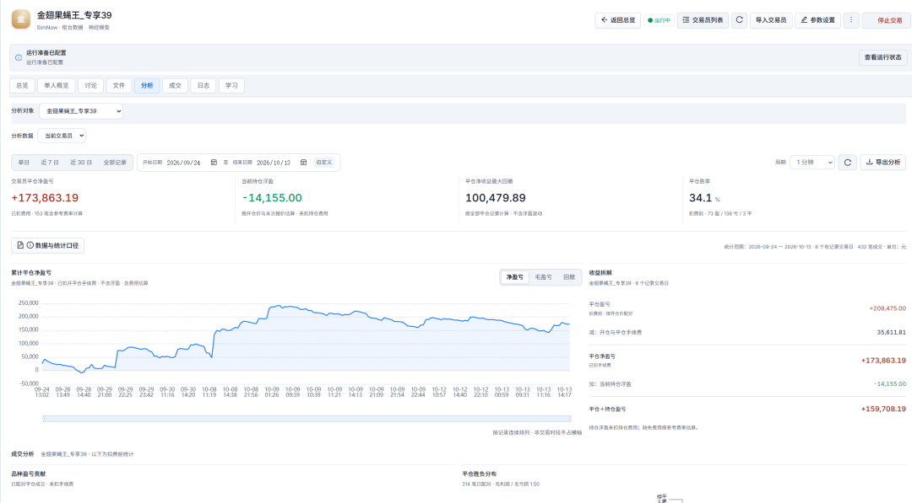
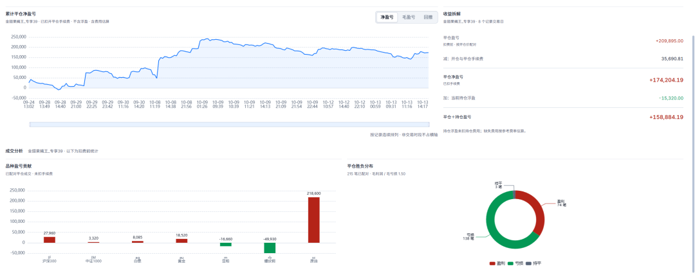
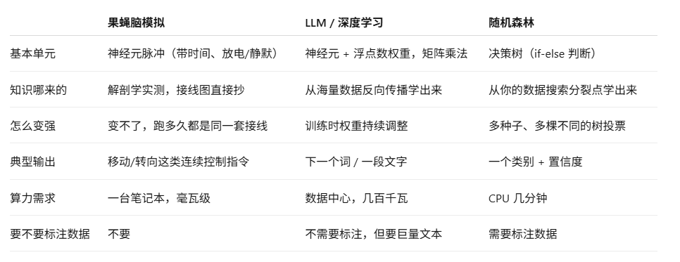
01
行情怎样进入果蝇神经模型
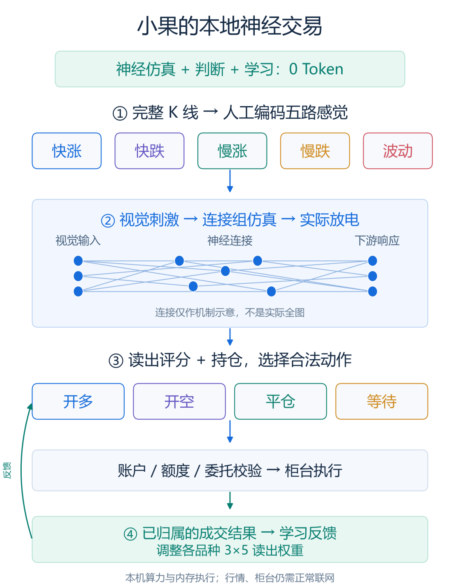
神经节点和连线是机制示意，不是完整解剖图。绿色反馈线表示交易结果影响后续评分；日常学习不会自动重写整张连接组。
果蝇神经连接组记录了神经元之间的连接关系。小果把这张连接图用于本地放电仿真，让输入沿神经连接传播，再读取下游神经元的实际响应。
市场数据需要先做转换。小果读取所选周期的完整 K 线，将价格变化整理为五路输入：快涨、快跌、慢涨、慢跌、波动。快慢分别描述较短和较长窗口的方向，波动描述近期价格变化的强弱。出厂参数的快、慢回看是 8 根和 32 根 K 线；用户可以修改，个人小果的配置也可以与出厂值不同。
这五路数据被编码为人工视觉刺激，送入模型的视觉通道。仿真完成后，系统读取实际放电响应，再交给交易评分层。行情本身的五个数与神经处理后的五路响应是前后两步，不是把指标换个名字直接当作神经输出。
果蝇连接图本身没有金融知识。把行情编码成刺激、把神经响应解释为交易动作，是我们在 SSQUANT 中实现的交易规则。小果的完整机制包含连接组仿真、显式判断规则和可学习的交易读出层。
02
它怎样从响应走到一笔交易
假设某个品种近期上涨，较长窗口也偏上涨。行情先形成较强的快涨、慢涨输入，经过仿真后，如果对应的神经响应也较强，交易规则就会形成较高的做多基础评分。已经学到的权重，再对这次评分作修正。
评分高并不直接等于下单。小果还会比较其他动作和等待门槛：波动较强时，默认规则会提高等待门槛；证据不足、两个方向难以区分，或者神经响应无效，都可以选择等待。用户设置的信号确认、冷却时间和成本过滤，也会影响能否开仓。
持仓状态同样参与判断。没有持仓时，可以比较开多和开空；已经持仓时，这套读出规则主要比较继续持有与平仓。 例如已有多仓，短暂的反向变化未必足以平仓，反向证据需要胜过继续持有和等待的门槛。
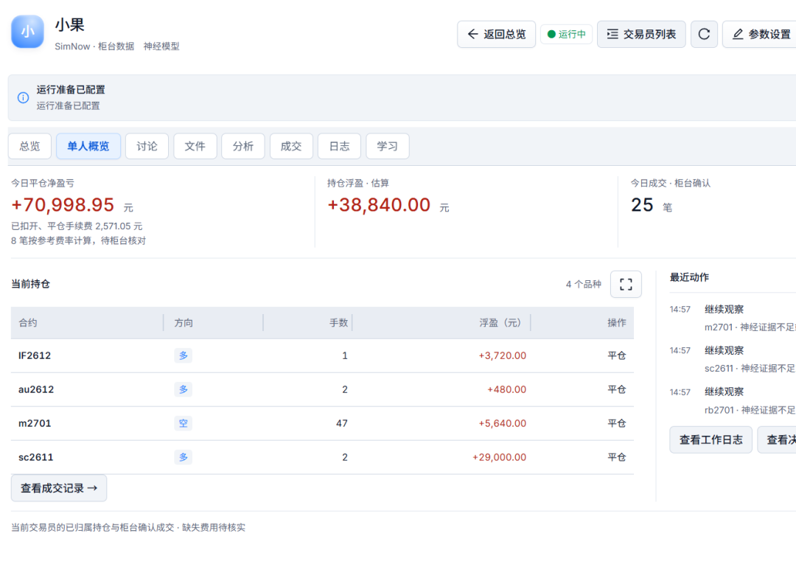
动作确定后，SSQUANT 才检查账户是否就绪、行情是否完整有效、持仓归属、名义额度以及未完成委托。交易数量与实际执行由交易系统处理。提交委托后，还要根据柜台回执确认是否成交；模型判断、委托提交与实际成交是三个不同环节。
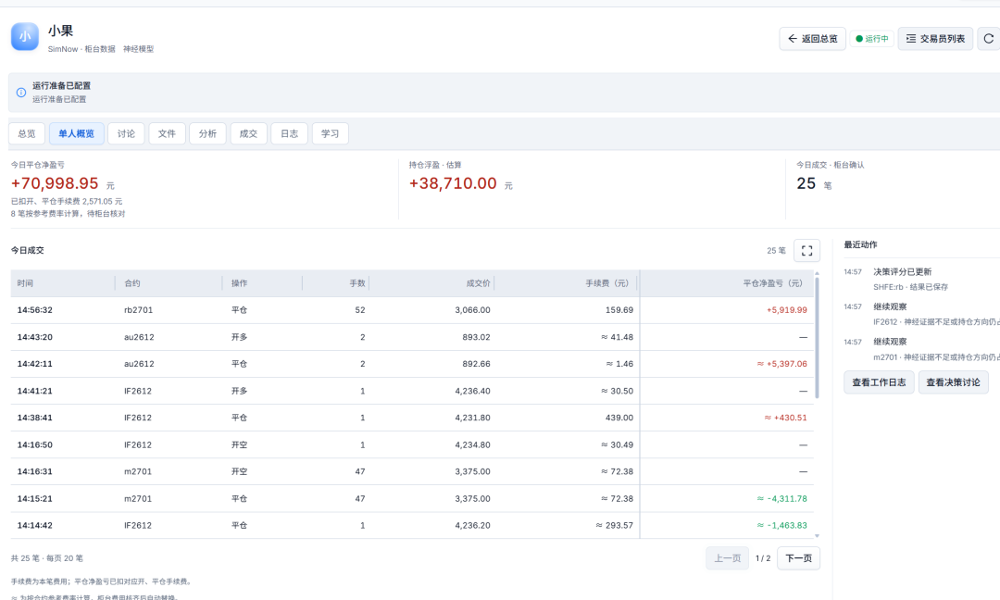
03
它学习什么，下一次会改变什么
小果保存做出判断时的神经响应和动作，等结果能够明确归属后，再给那次决定反馈。目前有两类主要反馈：
- 入场反馈
：等一段可以归属的交易完成并核实费用后，按净结果评价当初的开仓决定。 - 离场反馈
：平仓后继续观察后续完整 K 线，评价这次离场时机。默认观察后续 5 根，再与继续持有的假设结果比较；这只是离场评价，不是新增的实际利润。
学习主要发生在交易读出层。每个品种有一组 3×5 权重：三行对应开多、开空、平仓，五列对应快涨、快跌、慢涨、慢跌、波动的神经响应。等待由独立门槛处理。
一次反馈会比较“实际评价”与“原先预期”，再按学习率调整对应动作的权重。评价高于预期和低于预期，会产生不同方向的调整；所以并不是简单地“盈利就加分，亏损就减分”。学习率控制每次调整的幅度，奖励公式决定怎样评价结果。
回到刚才的上涨例子：小果在一组神经响应下选择了开多。交易完成后，这次结果如果比原先预期差，就会修正这组响应对应的做多权重。以后遇到相似响应时，做多评分可能受到不同的修正；最终是否开仓，仍需比较其他评分、等待门槛和执行条件。
这里的“进化”，是已有交易规则内的在线反馈学习。 它不是持续调用大模型推理，也不是每笔交易都重新深度训练整套果蝇网络。权重变化可以影响下一次判断，但不保证每次都改变动作，更不保证越学收益越高。
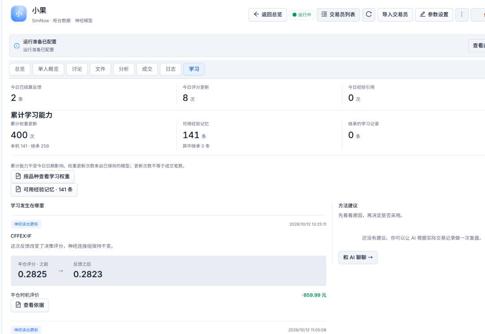
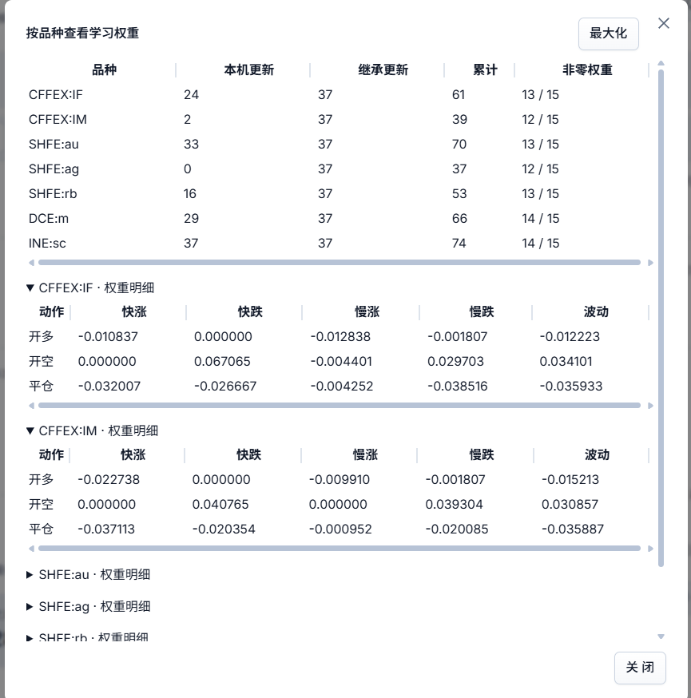
04
我给它一个策略方向，它会自己学出来吗
目前的小果不会仅凭一句“做趋势跟随”，就自动设计并深度训练一套新策略。你的策略方向，需要先转成明确的判断与学习规则。 这一步可以手动编辑，也可以让 AI 通过 CLI 帮你完成。
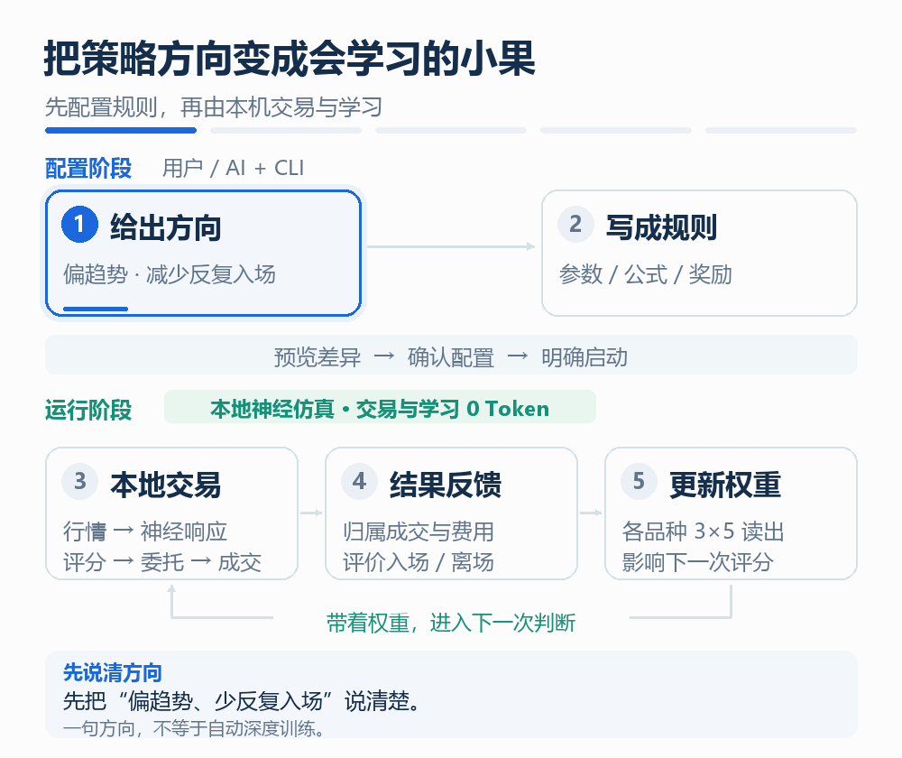
例如，你希望“偏趋势、减少反复入场”。需要明确：快慢趋势各看多长、怎样组合响应、什么程度才开仓、平仓后等多久、如何计算学习奖励。相应配置可以落在趋势参数、开仓公式、确认次数、冷却时间和奖励公式上。小果随后按这些规则运行，再用实际反馈调整自己的权重。
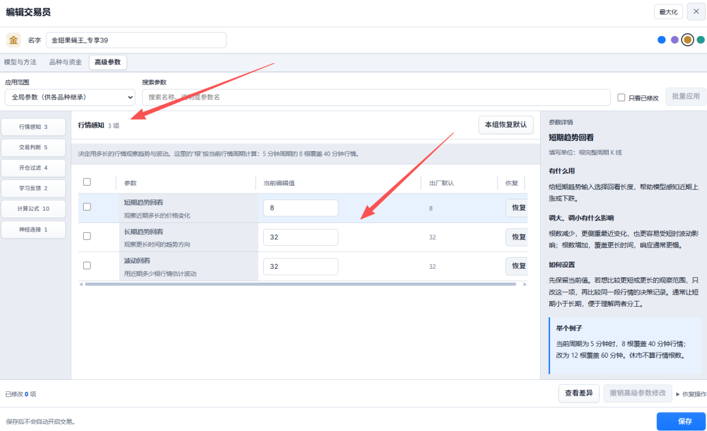
高级编辑器可以修改行情感知、交易判断、开仓过滤、学习率与奖励规则，也可以编辑受限数学公式，以及模型已有神经连接的倍率。公式可先用示例输入试算，再预览差异、保存。连接编辑作用于已有连接，不会任意新增神经元或生成一套新的网络。
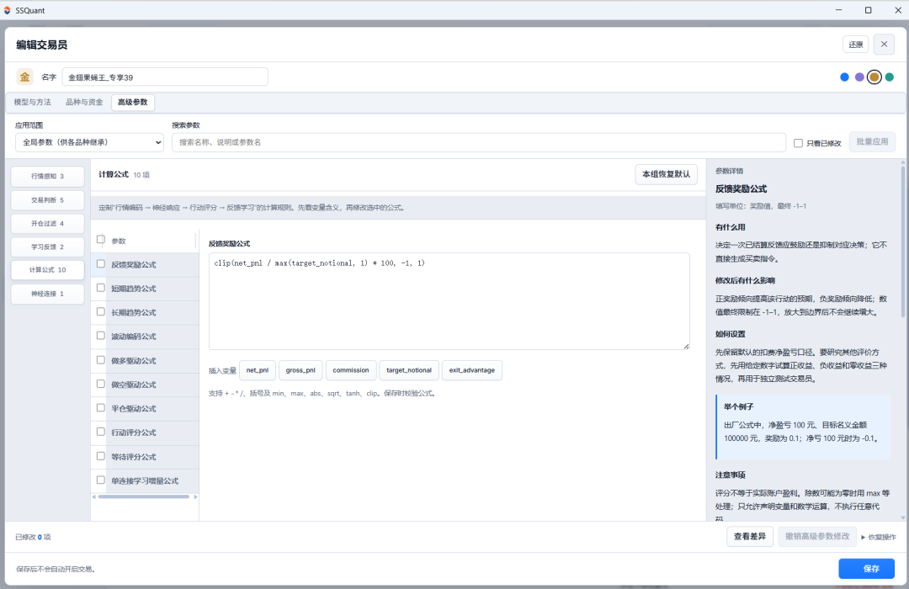
如果你提出的是“根据新闻理解产业供需”，当前这五路行情输入并没有直接承载新闻语义，需要另行实现输入与判断逻辑，或使用对应的其他交易员类型。策略方向能否实现，取决于输入、规则和学习目标有没有落到具体功能上。
05
开始构建自己的“果蝇交易员”
在发布的ssquant1.5桌面版里创建自己的交易员”
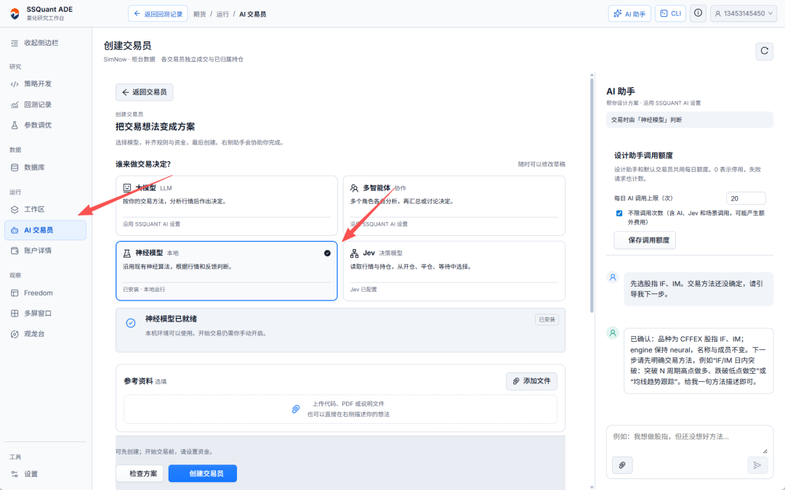
这一切都不要你手动，你只需要安装ssquant的CLI给你的智能体，让你本地的Agent完成SSQUANT里全部的操作，步骤如下：
1.点击CLI
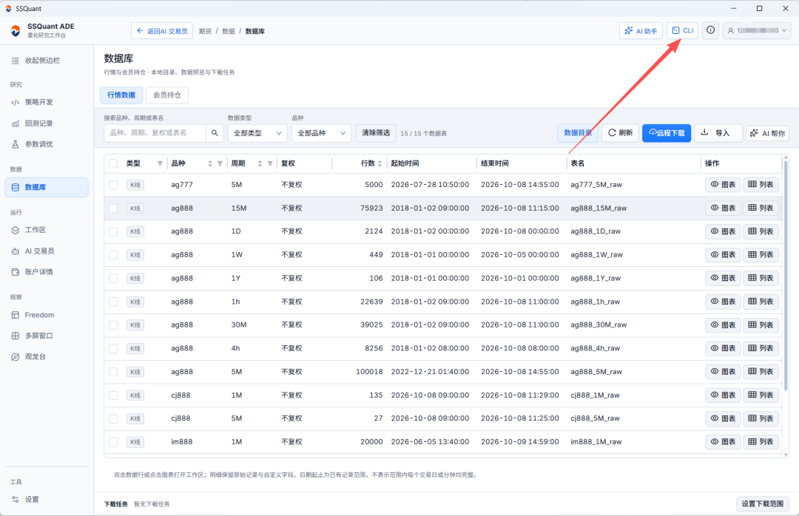
2.授权CLI&复制提示词发给你本地智能体
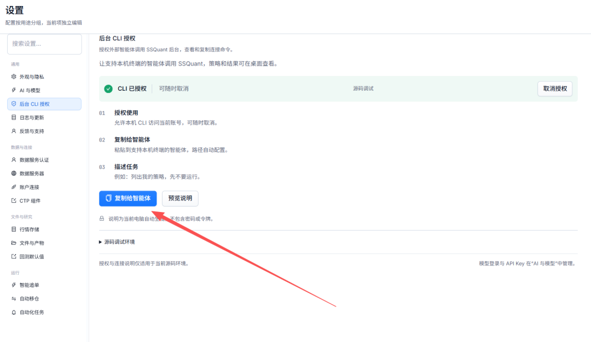
3.帮我创建Ai交易员：
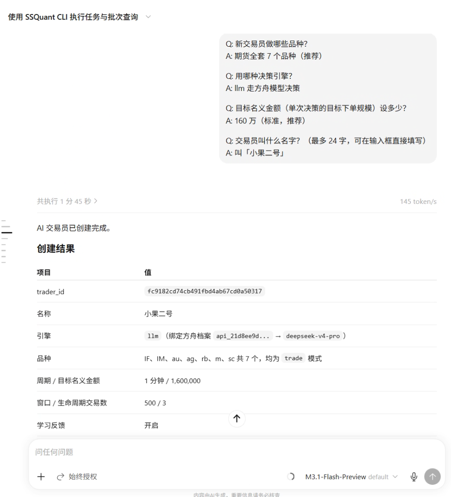
06
导入“金翅果蝇王”
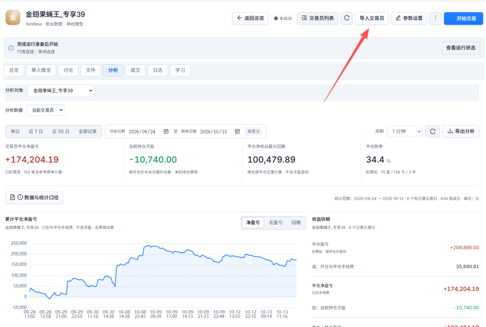